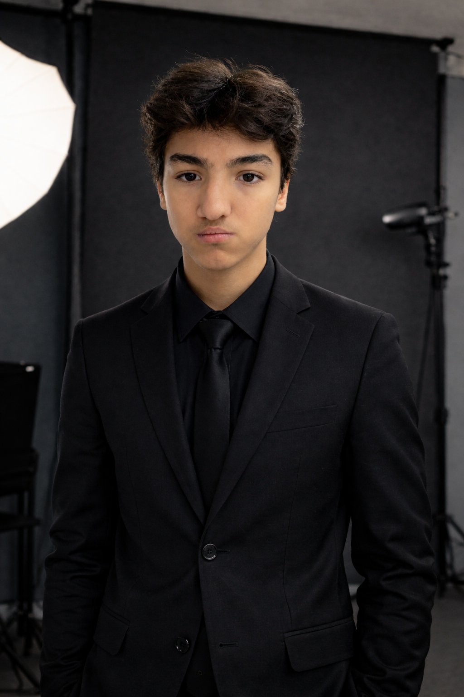
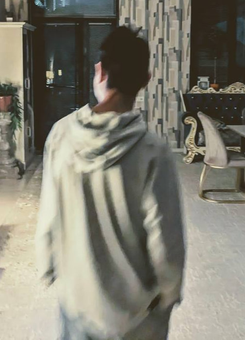

Salom,Mening Ismim
Dostonbek
Men zamonaviy va interaktiv veb-saytlar yaratuvchi
Frontend dasturchiman.
Har bir loyihada mukammal dizayn, toza kod va foydalanuvchilar uchun
qulaylikni
birlashtiraman.


Men haqimda
Hozirda veb-dasturlash yoʻnalishida faol rivojlanyapman: HTML va CSS yordamida sifatli kod yozish, Flexbox va Grid orqali murakkab setkalarni mukammal qurish hamda elementlarni toʻgʻri pozitsiyalash (positioning) ustida ishlayapman.
VS Code-da ishimni optimallashtirishga va har bir loyihani pixel-perfect holatiga keltirishga intilaman.
Kod yozishda men uchun eng muhimi tozalik, tartib va har bir detalga eʼtibor berishdir.
My Skills
HTML 5
Veb-sahifalarning "skeleti" va strukturasini yaratish. Toza, zamonaviy va mukammal (pixel-perfect) loyihalar uchun barcha turdagi semantik teglardan (header, section, article) unumli foydalanish.
CSS
Veb-saytlarga jon bag‘ishlash: murakkab 3D va 2D transformatsiyalar, animatsiyalar, moslashuvchan dizayn (Media Queries) va toza, strukturani buzmaydigan stillar yozish.
JAVASCRIPT
Sayt interaktivligi va funksionalligini ta'minlash. Hodisalarni (events) boshqarish, dinamik elementlar yaratish va toza, tushunarli JS kod yozish ko‘nikmasi.
Mening oilam
Hayotimdagi eng muhim insonlar va mening kuch-quvvat manbaim
Otam
Kadiradjiyev RustamMening dadam oilamizning mustahkam tayanchi, suyanchigʻi va eng katta himoyachisidir. Ular har bir ishda bizga toʻgʻri yoʻl koʻrsatadigan, donolik va mardlik timsoli boʻlgan insonlar. Dadamning mehnatsevarliklari va oilamiz uchun qilayotgan har bir fidoyiliklari men uchun haqiqiy oʻrnakdir. Ularning borliklari qalbimizga xotirjamlik va kuch bagʻishlaydi. Dadam bilan har soniyada faxrlanaman va ularga munosib farzand boʻlishga harakat qilaman.

Oyim
Kadiradjiyeva NilufarMening onam 1988-yil 13-iyunda tugʻilganlar. Ular hozirda uy bekalari, lekin shu bilan birga oʻz ustlarida ishlab, oʻqishga ham boradilar. Onam uy ishlariga ham, oʻqishlariga ham birdek ulgurib, bizga har doim oʻrnak boʻladilar. Uyda esa biz uchun har doim bir-biridan shirin va mazali ovqatlar pishirib beradigan eng mohir pazandadirlar. Men onamni juda yaxshi koʻraman.

Akam
Rahimdjanov SardorMening akam Sardor hayotdagi eng yaqin doʻstim, maslahatgoyim va tayanchimdir. Biz akam bilan nafaqat aka-uka, balki boʻsh vaqtlarimizda sevimli oʻyinlarimizni (ayniqsa, Xbox Series S konsolimizda) birga oʻynab, vaqti-vaqti bilan qiziqarli bellashuvlar oʻtkazadigan eng yaqin sirdoshlarmiz. Akamning har qanday vaziyatda meni qoʻllab-quvvatlashi va yonimda turishi men uchun juda qadrli. Ularning maqsadlariga sodiqligi meni ham doimo oldinga intilishga ruhlantiradi.

Singlim
Rahimdjanova ZarinaMening singlim Zarina oilamizning eng quvnoq, begʻubor va erka aʼzosidir. U oʻzining shirin feʼl-atvori, samimiy kulgisi va mehribonligi bilan butun uyimizga fayz va quvonch ulashadi. Singlim bilan birga vaqt oʻtkazish, unga turli maktab loyihalarida yordam berish va birgalikda ijodiy gʻoyalar oʻylab topish menga doimo oʻzgacha zavq bagʻishlaydi. Uning muvaffaqiyatlari va baxtli tabassumini koʻrish men uchun juda muhim.